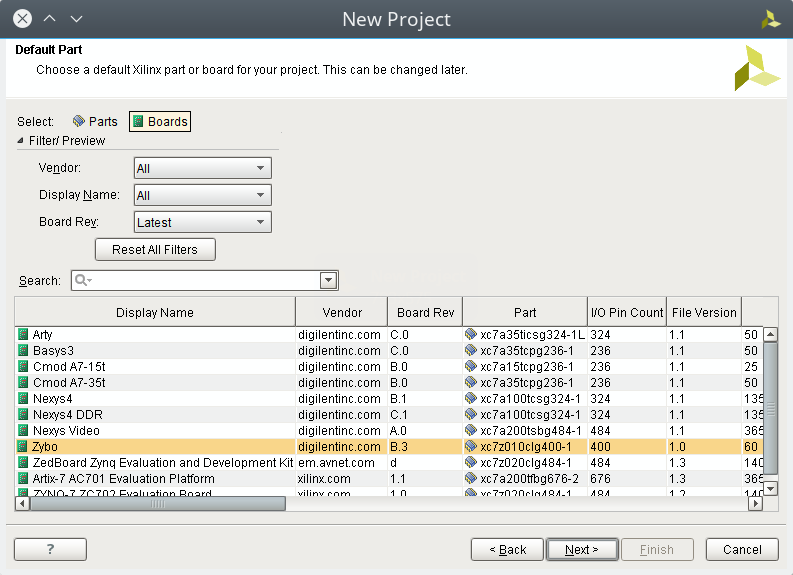
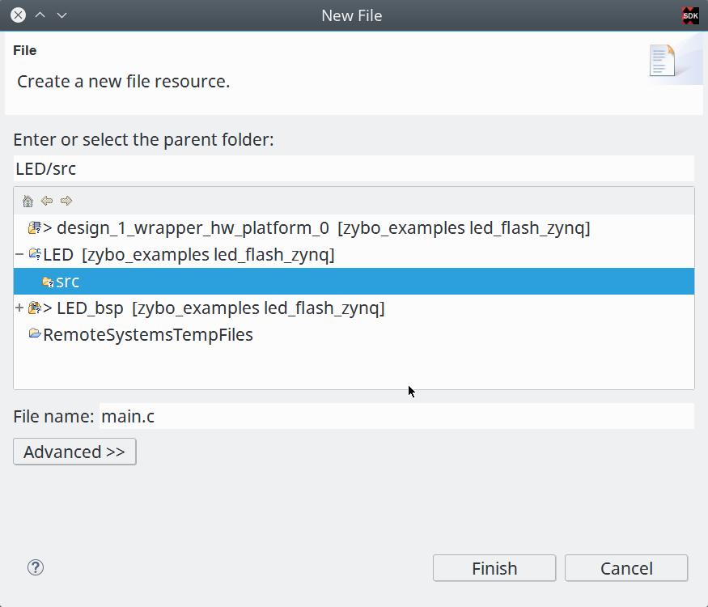

在 zybo board 開發記錄: 透過可程式邏輯控制 LED 閃爍 一文中我們說到了怎樣純粹使用 可程式邏輯 (Programmable Logic, PL) 去控制 Zybo board 上面的四個 LED 燈 (LD0 ~ LD3)，接下來就讓我們透過 Zynq 上的 ARM 處理器來作到同樣的一件事情吧。
本文主要參考自 Digilentinc 的 Getting Start Guide 並加入我自己試玩的一些心得。
開發目標
我們要透過 Zynq 上的 ARM 處理器，也就是 處理系統 (Processing System, PS)去控制 LED，具體目標與電路資訊如下:

根據 ZYBO FPGA Board Reference Manual 上面的資料，我們想要控制的這四個在板子上的 LED 都是位於可程式邏輯區(Programmable Logic, PL)可以碰觸到的地方，如果你想要透過 Zynq 去對這些 LED 進行控制，你就會需要透過 AXI GPIO 的幫助，就像這樣:

認識 AXI 匯流排
AXI 匯流排是作什麼用的？我們就從 Zynq 的架構來看 (參照 The Zynq Book p.28)
由上圖可以看到 AXI 匯流排橫跨了處理器系統 (Processing System, PS) 與可程式邏輯 (Programmable Logc, PL) 兩區，並連接到週邊。
實際上，AXI 協議為 ARM 的協議規範，來自於 AMBA 匯流排架構，若你對整個協議的內容有興趣，可以到 ARM 的 網站 去下載規格書。
建立我們的專案
我們首先當然是建立我們的專案了，在進行這一步前，請先確定你有按照 讓 Vivado 有 Zybo Board 的設定檔 一文所說，將 Zybo board 的設計導入。
啟動了 Vivado 後，點選 Create New Project 。

接下來指定好你的專案名稱與路徑
選擇 RTL Project

在開發板選項中，選擇 Zybo Board

完成專案建立
建立 Block Design
當我們的設計需要用到 Zynq 的處理器系統(Processing System, PS)時候，就需要透過 Block Design 來建立我們的電路設計，首先點選 IP Integrator -> Create Block Design 。
接著點選 OK 建立我們的 block design
點選 Add IP 按鈕去增加我們需要的 IP 核
我們首先尋找 Zynq 並將 ZYNQ7 Processing System 加入到我們的 Block Design，並點選 Run Block Automation 對 Zynq 處理器進行一些設定
進入到 Run Block Automation 的設定頁面後，確認 processing_system7_0 有被勾選到，並且 Cross Trigger In 以及 Cross Trigger Out 都是 Disable 的狀態，點選 Ok 結束設定。
上面的設定好了後，就會看到 ZYNQ7 Processing System 的 DDR 以及 FIXED_IO 都有接線出來
點選 Add IP 按鈕去增加我們需要的 IP 核，這次我們要增加 AXI_GPIO ，用來對可程式邏輯(Programmable Logic, PL)區域的 LED 進行控制，完成後點選上方的 Run Connection Automation 按鈕
在 Run Conenction Automation 視窗內，我們選擇 Custom (其實也可以在這邊直接選擇 leds 4bits)
接下來勾選 S_AXI ，並點選 Ok 進行確認。
好了後會像這樣，我們接下來對 axi_gpio_0 這個區塊點兩下，進行手動設定
在 IP Configuration 頁面，設定 GPIO 為輸出腳，並設寬度為 4 ，這邊我將輸出預設值設定為 0xF, 也就是預設這四個 LED 用的輸出腳都是 High 的電壓。完成後點選 OK, 結束 AXI_GPIO 的設定。
接下來點選 Validate Design 按鈕，我們要確認我們的 Block Design 沒問題才能夠繼續往下走。
正常來講不會有啥問題才對，我們結束 Block Design 的工作
加入 Constraints
在 zybo board 開發記錄: 透過可程式邏輯控制 LED 閃爍 一文有提到如何取得 Constraints 檔案，不過為了讓這篇文章完整，我們再講一次。
我們先連結到 Zybo Resource Center 去下載 Master XDC 檔案。

你也可以直接透過 wget 命令下載並解壓出 ZYBO_Master.xdc 這個檔案，它就是本節要加入的 Constraints 檔
coldnew@gentoo /tmp $ wget https://reference.digilentinc.com/_media/zybo/zybo_master_xdc.zip coldnew@gentoo /tmp $ unzip zybo_master_xdc.zip Archive: zybo_master_xdc.zip inflating: ZYBO_Master.xdc
接下來一樣選擇 Project Manager -> Add sources 來增加檔案
這次我們要增加的是 Constraints 檔，因此選擇 Add or create constraints

透過 Add Files 添加剛剛下載的 ZYBO_Master.xdc 檔案

ZYBO_Master.xdc
在 ZYBO_Master.xdc 裡面，預設所有對應接腳都是被註解掉的，這邊我們反註解我們需要的 led 接腳，要記得一下這邊的 I/O 名稱，我們等等要和產生出來的 HDL Wrapper 進行對應的工作。
##LEDs ##IO_L23P_T3_35 set_property PACKAGE_PIN M14 [get_ports {led[0]}] set_property IOSTANDARD LVCMOS33 [get_ports {led[0]}] ##IO_L23N_T3_35 set_property PACKAGE_PIN M15 [get_ports {led[1]}] set_property IOSTANDARD LVCMOS33 [get_ports {led[1]}] ##IO_0_35 set_property PACKAGE_PIN G14 [get_ports {led[2]}] set_property IOSTANDARD LVCMOS33 [get_ports {led[2]}] ##IO_L3N_T0_DQS_AD1N_35 set_property PACKAGE_PIN D18 [get_ports {led[3]}] set_property IOSTANDARD LVCMOS33 [get_ports {led[3]}]
這樣我們就可以準備將 Block Design 和硬體接腳對應在一起了。
產生 HDL Wrapper
接下來我們要透過 Block Design 產生我們的 HDL wrapper，對你的 Block Design 檔案點選右鍵，選擇 Create HDL Wrapper 。它會根據你專案設定的語言 (VHDL 或是 Verilog) 來產生相對的 HDL 程式碼。
產生出來的東西我們可能需要改些東西，為了避免麻煩這邊我選第一個選項。
好了後，假設你的 Block Design 檔案叫做 design_1.bd，那就會產生 design_1_wrapper.v 或是 design_1_wrapper.vhdl 這樣的檔案
我們接著要修改這個 HDL Wrapper，這是為什麼呢? 回去看一下前面做好的 Block Design 以及 Constraints 的資訊，我們可以看到 Block Design 設定好的 AXI_GPIO 其輸出腳叫做 gpio_rtl ，而在 Constraints 中，我們目標的 LED 輸出腳名稱是 led ，因此我們要調整一下這個 HDL Wrapper 讓 gpio_rtl 和 led 可以對應在一起。
由於在本範例中，design_1_wrapper.v 也就是 toplevel 的模組，因此在這邊將對外的 gpio_rtl_tri_o 接腳改為 led 讓它接出即可。
diff --git a/led_flash_zynq.srcs/sources_1/imports/hdl/design_1_wrapper.v b/led_flash_zynq.srcs/sources_1/imports/hdl/design_1_wrapper.v index 7b1b0bd..c57caa0 100644 --- a/led_flash_zynq.srcs/sources_1/imports/hdl/design_1_wrapper.v +++ b/led_flash_zynq.srcs/sources_1/imports/hdl/design_1_wrapper.v @@ -31,7 +31,7 @@ module design_1_wrapper FIXED_IO_ps_clk, FIXED_IO_ps_porb, FIXED_IO_ps_srstb, - gpio_rtl_tri_o); + led); inout [14:0]DDR_addr; inout [2:0]DDR_ba; inout DDR_cas_n; @@ -53,7 +53,7 @@ module design_1_wrapper inout FIXED_IO_ps_clk; inout FIXED_IO_ps_porb; inout FIXED_IO_ps_srstb; - output [3:0]gpio_rtl_tri_o; + output [3:0]led; wire [14:0]DDR_addr; wire [2:0]DDR_ba; @@ -76,7 +76,7 @@ module design_1_wrapper wire FIXED_IO_ps_clk; wire FIXED_IO_ps_porb; wire FIXED_IO_ps_srstb; - wire [3:0]gpio_rtl_tri_o; + wire [3:0]led; design_1 design_1_i (.DDR_addr(DDR_addr), @@ -100,5 +100,5 @@ module design_1_wrapper .FIXED_IO_ps_clk(FIXED_IO_ps_clk), .FIXED_IO_ps_porb(FIXED_IO_ps_porb), .FIXED_IO_ps_srstb(FIXED_IO_ps_srstb), - .gpio_rtl_tri_o(gpio_rtl_tri_o)); + .gpio_rtl_tri_o(led)); endmodule
改好後，點選上方的 Run Implementation 來確認我們這樣的修改是否能編譯/驗證成功。
產生位元流 (bitstream)
前面的處理都好了後，接下來點選 Program and Debug -> Generate Bitstream 去讓 Vivado 將這個專案產生出位元流 (bitstream)，ZYNQ 會根據 bitstream 的資訊對 FPGA 進行設定。
當 bitstream 產生完成後，由於我們這次的實作，是要透過寫 C 語言程式來控制 Zynq 進行 LED 的亮暗，因此要先將剛剛產生的硬體資訊輸出給 Xilinx SDK 去。
點選 File -> Export -> Export Hardware
確定你有勾選 Include bitstream ，點選 Ok
完成後，啟動 Xilinx SDK
Xilinx SDK
我們啟動 Xilinx SDK 後，可以先看到一些像是位址映射 (Address Map) 的資訊
選擇 File -> New -> Application Project 去建立新的專案
這邊我命名這個專案叫做 LED，並且為獨立的程式
選擇 Empty Application ，我們要自己來寫我們的程式。
當專案建立完成後，會自動打開 LED_bsp 裡面的 system.mss ，裡面會顯示我們所用的週邊範例程式碼以及使用手冊的連結，我們可以點選這些連結來了解這些週邊要怎樣使用。
如果你連結點選不開的話，可以到你安裝 SDK 的路徑下去尋找，比如說我裝的是 Vivado 2016.2，則手冊的路徑在
/opt/Xilinx/SDK/2016.2/data/embeddedsw/XilinxProcessorIPLib/drivers
這裡給個結果的範例，比如我想要查詢 xgpio 的資料，則可以看到如下的 HTML 檔案

建立 main.c
由於我們建立的是空白專案，必須自己添加自己的主程式，因此我們對 LED 專案的 src 按下右鍵，選擇建立新的檔案
這邊將它命名為 main.c ，也就是我們唯一的主程式，點選 Finish 完成檔案建立。

在 main.c 加入以下程式碼，具體功能待會在說明。
#include "xparameters.h" #include "xgpio.h" #include <stdio.h> #include <stdlib.h> void simple_delay (int simple_delay) { volatile int i = 0; for (i = 0; i < simple_delay; i++); } int main(int argc, char *argv[]) { XGpio led_gpio; /* LED Instance */ /* Initialize LED GPIO settings */ XGpio_Initialize(&led_gpio, XPAR_AXI_GPIO_0_DEVICE_ID); XGpio_SetDataDirection(&led_gpio, 1, 0); /* Output something via UART1, 115200 baudrate */ printf("Start to blink led_gpio !!!\n\r"); int led_value = 0x03; /* default led_gpio value */ while(1) { printf("led_gpio value set to 0x%X\n\r", led_value); /* Set GPIO Channel 1 value. */ XGpio_DiscreteWrite(&led_gpio, 1 , led_value); /* sleep and change led_gpio value */ simple_delay(10000000); led_value = ~led_value; } return 0; }
main.c
在 main.c 的開頭，我們載入了需要使用的幾個標頭檔，在 Xilinx SDK 中，已經包含了一些預設好的函式庫等功能，具體資訊請查閱 Xilinx OS and Libraries Document Collection (UG643) 手冊。
xparameters.h 這個標頭檔則是 Xilinx SDK 自己產生的，裡面會包含一些關於你使用的 IP Core 的資訊，比如標準輸出的基底位址 (base address) 或是其他和你這份硬體相關的設定。而 xgpio.h 則提供了一些高階的抽象函式，讓你開發 GPIO 相關的功能可以更加輕鬆。
#include "xparameters.h" #include "xgpio.h" #include <stdio.h> #include <stdlib.h>
我們用一個非常簡單的延遲 (delay) 函式讓 CPU 很忙碌的計算，來達到延遲程式的效果。
void simple_delay (int simple_delay) { volatile int i = 0; for (i = 0; i < simple_delay; i++); }
接下來是我們的主程式，我們將它拆開來看，後面見到的程式碼都會塞到主程式中。
int main(int argc, char *argv[]) { // code return 0; }
是時候進入到 GPIO 的功能設定，注意到 XPAR_AXI_GPIO_0_DEVICE_ID 這個，你可以把它對應回我們的 Block Design 的 axi_gpio_0 ，這個巨集(Macro)即是 Xilinx SDK 產生，定義在 xparameter.h 裡面。
XGpio led_gpio; /* LED Instance */ /* Initialize LED GPIO settings */ XGpio_Initialize(&led_gpio, XPAR_AXI_GPIO_0_DEVICE_ID); XGpio_SetDataDirection(&led_gpio, 1, 0);
我們透過 printf 去顯示一些簡單得除錯訊息，這邊的訊息會透過 UART 輸出，你可以透過電腦端的軟體來收到(ex: gtkterm、teraterm)，我自己是透過 emacs 的 serial-term 命令來收訊息，baud rate 則是設定為 115200 、連接目標則是 /dev/ttyUSB1 。
/* Output something via UART1, 115200 baudrate */ printf("Start to blink led !!!\n\r");
最後，使用一個無窮迴圈去控制 LED 數值的變化，並透過 XGpio_DiscreteWrite 去對 GPIO 的通道 1 (參考前面 Block Design) 進行資料寫入的工程，再調整下一次到迴圈時要的 LED 數值，一直重複這些動作。
就這樣，我們的程式完成了。
int led_value = 0x03; /* default led value */ while(1) { printf("led value set to 0x%X\n\n", led_value); /* Set GPIO Channel 1 value. */ XGpio_DiscreteWrite(&led_gpio, 1, led_value); /* sleep and change led value */ simple_delay(10000000); led_value = ~led_value; }
下載到 Zybo board
確定此時你有將 Zybo board 接到電腦，並且你 JP5 設定在 QSPI 模式下，就像這樣

選擇 Xilinx Tools -> Program FPGA 進行 FPGA 的燒錄。
確認要燒錄的資料無誤後，點選 Program 將位元流 (bitstream) 燒錄到 FPGA 去，燒完後你會發現 LD0 ~ LD3 都是亮燈的狀態，因為我們在 Block Design 預設 AXI_GPIO 輸出為 0xF 。

選擇 Run -> Run Configuration 進行執行前的一些設定。
我們在 Xilinx C/C++ Application(GDB) 建立一個新的設定，由於我們已經燒錄好 FPGA 因此只需要重起處理器系統 (Processing System, PS)即可。
確認你有啟用 ps7_init 這些設定，ps7_init 定義了一些初始化的程式，我們之所以能夠使用 printf 將資訊透過 UART 輸出，也是透過 ps7_init 的協助，具體請參考 Zynq-7000 All Programmable SoC: Embedded Design Tutorial A Hands-On Guide to Effective Embedded System Design (UG1165), p.24 頁。
除了這邊設定外，別忘記指定要跑的專案，Xilinx SDK 是允許同份硬體設計檔跑很多種專案的，以本文範例而言，我們要跑得專案叫做 LED 。
都設定好後，點選 Run 然後祈禱一切正常!!
結果
在你執行 Program device 以及 Run 後，Xilinx SDK 會將位元流(bitstream) 下載到我們的 Zybo Board，接著重設 CPU 後執行我們下載的程式，最後完成的成果如下
如果你有啟用可以接收 UART 相關的程式，如 gtkterm、teraterm、screen、emacs 等的話，啟動它並開啟 /dev/ttyUSB1 後，設定 baudrate 為 115200 ，就會看到我們程式透過 printf 輸出的訊息
取得程式碼
本文的範例已經放置於 GitHub 上，你可以到以下的 repo 去尋找，具體專案對應的教學名稱，則請參考 README.md 檔案